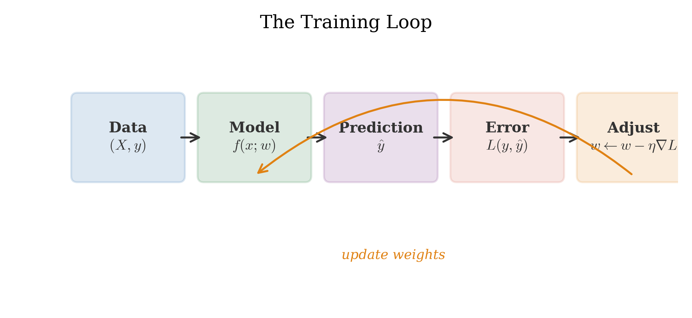
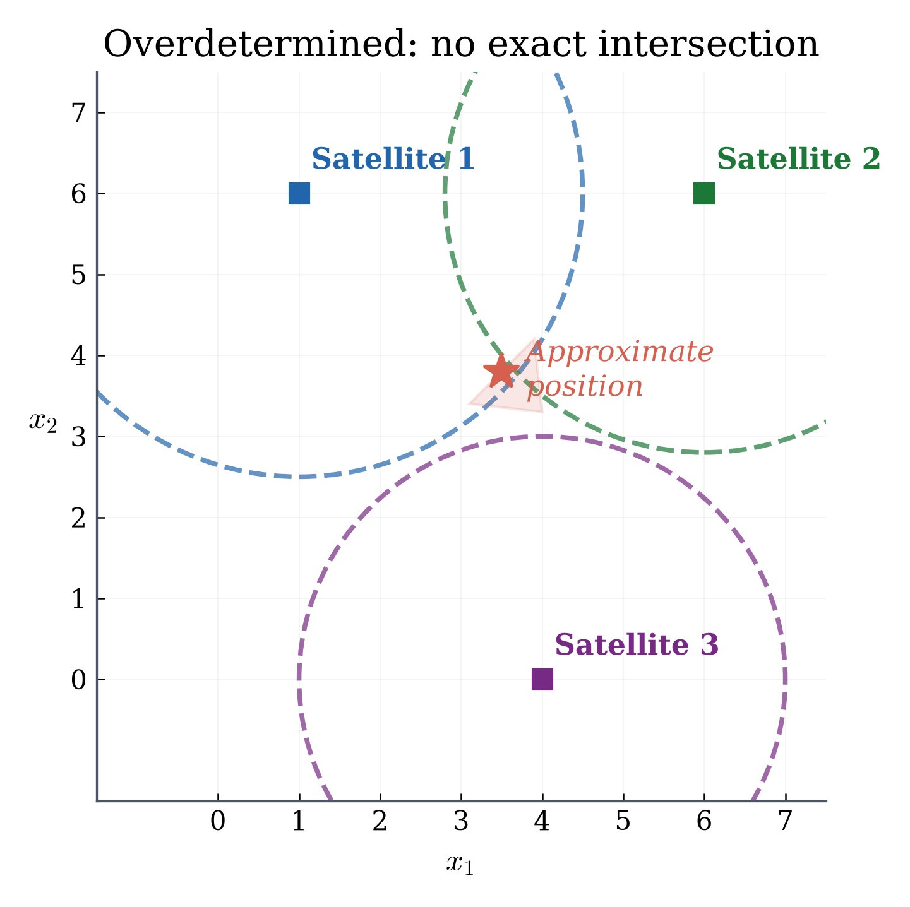
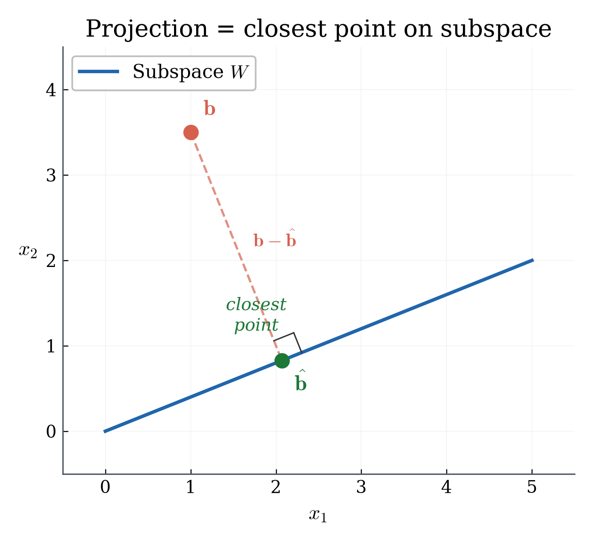
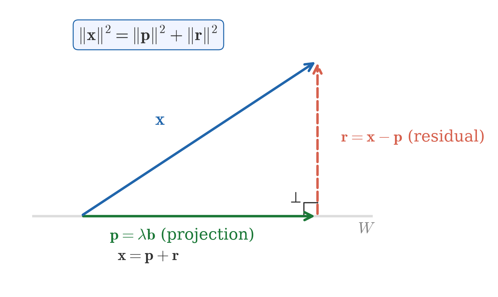
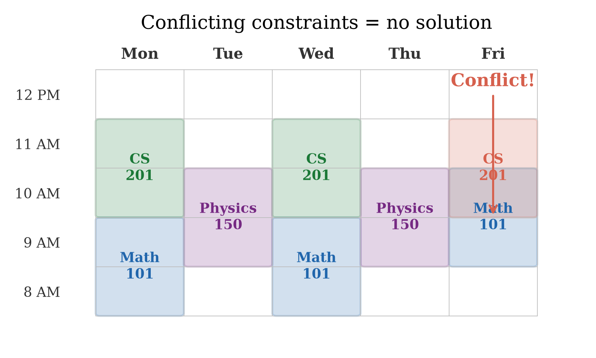
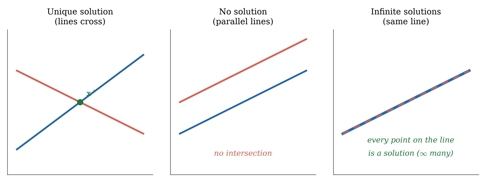
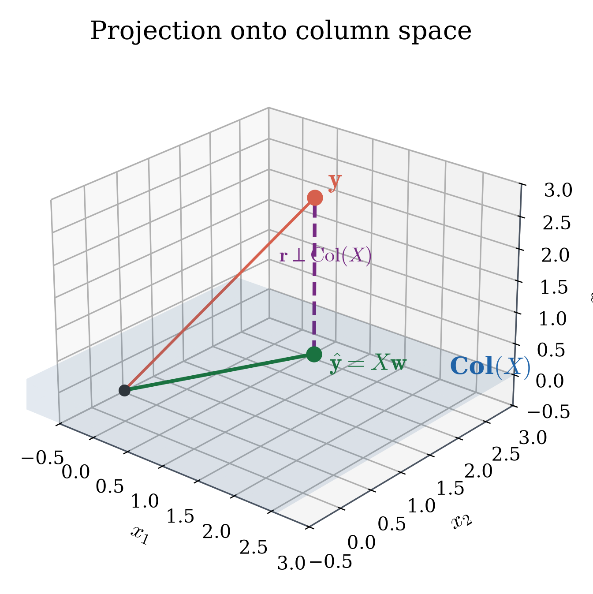
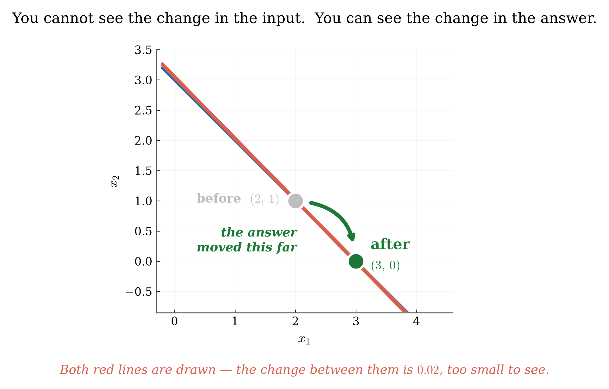
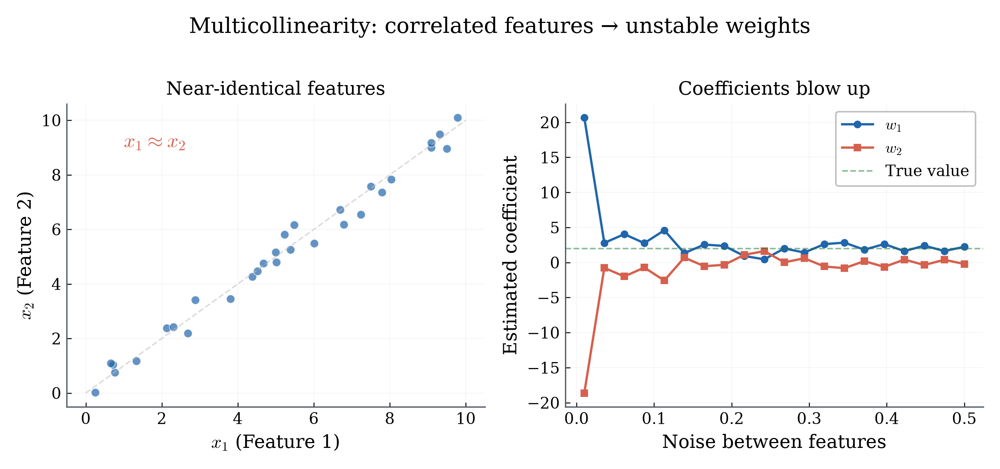

Written as equations: \(x = 19\), \(x = 21\), \(x = 20\). No single number satisfies all three.
You cannot be right for everyone. You can only be wrong by as little as possible.
You'd probably say the average: \(x^* = \frac{19+21+20}{3} = 20\) — the best compromise.
But why the average? When the answers conflict, what does "best" mean — and how do we find it?
Why the average? Minimizing squared error
We never find out your real age. All we have is the three answers — so "error" here does not mean distance from the truth. It means how far our one answer sits from each friend's.
Pick a candidate \(x\). It misses Alice by \(x-19\), Bob by \(x-21\), Carol by \(x-20\). Square each one, so being 2 too high counts the same as being 2 too low. Then add them up:
Our answer \(x\)
miss Alice \((x-19)^2\)
miss Bob \((x-21)^2\)
miss Carol \((x-20)^2\)
Total
18
1
9
4
14
19
0
4
1
5
20
1
1
0
2
21
4
0
1
5
22
9
1
4
14
The average gives the smallest total. Not a coincidence — it's a theorem, and it needed no true answer to find.
From the average to least squares
The table showed it for five candidates. Here is the claim in full, for any data at all:
Theorem. For any numbers \(b_1,\dots,b_n\), the total squared miss
\[f(x) \;=\; \sum_{i=1}^{n} (x - b_i)^2\]
is smallest at exactly one value of \(x\): the average \(\;\bar{b} = \tfrac{1}{n}\sum_i b_i\).
Its smallest value is \(\sum_i (\bar{b} - b_i)^2\).
Our data: \(\bar b = \frac{19+21+20}{3} = 20\), and the leftover is \(1+1+0 = 2\) — exactly the smallest row of the table.
"Exactly one" is part of the claim: no tie, no second-best answer.
That leftover \(\sum_i(\bar b - b_i)^2\) is the error no choice of \(x\) can remove. The friends disagree with each other; no single number can fix that.
Why the average wins
You already know how to minimize a function: differentiate, set it to zero.
Set \(f'(x)=0\): \(\;nx=\sum_i b_i\;\), so \(\;x=\frac{1}{n}\sum_i b_i=\bar b\). The average falls out.
\(f''(x)=2n>0\) everywhere, so this is a minimum — and it's the only place \(f'\) is zero, so it's the only one.
Our data: \(f'(x)=2(3x-60)=0 \Rightarrow x=20\).
This is exactly what training a model does: write down the error, differentiate, and go where the derivative says. Every AI system in this course is doing this — just with many variables instead of one.
This is how AI models train

Every AI training loop does the same thing:
Make a prediction.
Compare it to the answer recorded in the data.
Measure the error — square it, then add up over all the data.
Adjust to make that total smaller.
Step 2 says recorded in the data — not the truth. A model never sees the truth. It only sees what was written down, and that can be noisy, or disagree with itself, exactly like three friends who give you three different ages.
The age problem is steps 1–3, with the three guesses as the recorded answers. Today we build the geometry of step 4.
Name the pattern: overdetermined system

The age-guessing problem has a famous twin — the one in your pocket:
A system \(A\mathbf{x} = \mathbf{b}\) with more equations than unknowns (\(m > n\)) is called overdetermined.
A best-fit solution minimizes \(\norm{A\mathbf{x} - \mathbf{b}}\).
GPS. Each satellite reports only how far away it is — that puts you somewhere on a circle around it. Two circles already cross at a point, so with perfect readings two satellites would be enough, and a third would pass through that same point.
But every reading carries error, so the three circles bound a small triangle instead of meeting. No point sits on all three. The error causes that — not the extra satellite.
So why carry a third? Two satellites give an exact answer that is exactly as wrong as your error, with nothing to warn you. Three cannot all be satisfied — and that failure is the information.
\(m > n\) is not the problem; it is the redundancy that beats the noise. Your phone picks the point that misses all three by the least. AI training is the same trade: millions of examples, thousands of weights (\(m \gg n\)).
Quick check
Alice adds a fourth friend's guess: 20.5. Does the best-fit error go up or down compared to three friends?
Up — adding another constraint to satisfy usually increases the total error. More data means more equations to juggle, so the best compromise gets slightly worse per equation.
This is why training error in machine learning usually decreases as you add parameters but increases as you add data — more data means more constraints.
The real question: closest point

Imagine you're standing on a hill and you want to get to a road below. What's the shortest path to the road?
Walk straight toward the road — perpendicular.
Any other path would be longer.
The point where you hit the road is the closest point.
In math: given a point and a line (or subspace), the closest point on the line is the orthogonal projection.
Deriving the formula: where does the projection land?

The closest point on the line is \(\mathbf{p} = \lambda \mathbf{b}\) for some scalar \(\lambda\). Which \(\lambda\)?
Step 1: The residual must be perpendicular to the line:
\[\mathbf{b}^\top \underbrace{(\mathbf{x} - \lambda \mathbf{b})}_{\text{residual}} = 0\]
Step 2: Expand:
\[\mathbf{b}^\top \mathbf{x} - \lambda\,\mathbf{b}^\top \mathbf{b} = 0\]
Step 3: Solve for \(\lambda\):
\[\boxed{\lambda = \frac{\mathbf{b}^\top \mathbf{x}}{\mathbf{b}^\top \mathbf{b}}}\]
The projection formula is not magic — it comes directly from one requirement: make the error perpendicular.
Projection: a concrete example
Line direction: \(\mathbf{b} = (1,1)\). Point: \(\mathbf{x} = (2,0)\).
The constant best-fit model predicts the mean! Our age-guessing problem returns.
Deriving the normal equation
We know from L03: the best fit makes the residual perpendicular to the column space. Let's turn this into a formula.
Step 1 — State the goal: the residual \(\mathbf{r} = \mathbf{y} - X\mathbf{w}\) must be perpendicular to every column of \(X\).
Step 2 — Write it in math: "\(\mathbf{r}\) is perpendicular to every column" means:
\[X^\top \mathbf{r} = \mathbf{0}\]
(Each row of \(X^\top\) dots with \(\mathbf{r}\) and gives zero.)
Four steps: goal → math → substitute → rearrange. The normal equation is a direct consequence of perpendicularity.
The normal equation: summary
\[\boxed{X^\top X \,\mathbf{w} = X^\top \mathbf{y}}\]
Where it comes from: residual ⊥ column space (the projection principle).
What it does: finds the weights that minimize squared error.
If \(X^\top X\) is invertible: \(\mathbf{w}^* = (X^\top X)^{-1}X^\top \mathbf{y}\).
The word "normal" means perpendicular (not "ordinary").
This is the same idea as the 1D projection formula \(\lambda = \frac{\mathbf{b}^\top \mathbf{x}}{\mathbf{b}^\top \mathbf{b}}\), generalized to multiple dimensions.
You just did what sklearn.linear_model.LinearRegression does internally — with pencil and paper!
Quick check
If \(X^\top X\) is not invertible, what does that suggest about the columns of \(X\)?
The columns are linearly dependent — some features are redundant. For example, if one column is twice another, you can't tell which feature is "doing the work."
Real-world example: if you include both temperature in °C and °F as features, one is redundant. The formula can't separate their contributions.
MSE is the one number that defines "best fit." [MASTER]
The normal equation \(X^\top X\mathbf{w} = X^\top \mathbf{y}\) — a direct formula. [MASTER]
Solve by hand for small examples (1-2 parameters). [MASTER]
But the normal equation has limits: it requires computing \(X^\top X\) and inverting it. What if that matrix is too big, or nearly singular? Next lectures: we'll explore when things go wrong — and what to do about it.
L05 — Can you take all the classes you want?

You want to take 4 classes, but some meet at the same time. Can you find a schedule that satisfies every constraint?
Each constraint: "this class needs this time slot."
Sometimes all constraints can be satisfied (exact solution).
Sometimes some conflict — you have to compromise.
Linear systems are the math of constraints. Today: when do exact solutions exist, and what structure tells us?
Example: two equations, two unknowns
You and a friend are splitting a restaurant bill. You ordered differently:
You: 1 taco + 1 drink = $5
Friend: 1 taco − 1 drink = $1 (friend paid less for just a taco)
\[\begin{cases} x + y = 5 \\ x - y = 1 \end{cases}\]
Add: \(2x = 6 \Rightarrow x = 3\). Substitute: \(y = 2\).
Taco costs $3, drink costs $2. One exact solution.
Three possible outcomes for a linear system
A linear system \(A\mathbf{x} = \mathbf{b}\) can have:
Exactly one solution — lines cross at one point.
No solution — parallel lines, contradictory constraints.
Infinitely many — same line, redundant constraints.

Quick check
What if the second equation were \(x + y = 10\) instead of \(x - y = 1\)?
\(\begin{cases} x + y = 5 \\ x + y = 10 \end{cases}\)
No solution — \(x + y\) can't be both 5 and 10. The equations are contradictory (parallel lines).
Column space: what can the model produce?
Think of a vending machine with two buttons. Button A dispenses a combo of items, Button B dispenses a different combo. You can press each button any number of times.
The column space is everything you can get from combining button presses.
If what you want is in the column space → exact solution exists.
If it's outside the column space → no exact solution.
The column space of \(A\): \(\text{col}(A) = \{A\mathbf{x} : \mathbf{x} \in \mathbb{R}^n\}\) — all possible outputs.
\(A\mathbf{x} = \mathbf{b}\) has a solution \(\iff\) \(\mathbf{b} \in \text{col}(A)\).
Example: what can this matrix produce?
\[A = \begin{bmatrix} 1 & 0 \\ 0 & 1 \\ 0 & 0 \end{bmatrix}\]
Any \(A\mathbf{x}\) has the form \(\begin{pmatrix}x_1\\x_2\\0\end{pmatrix}\).
The column space is a plane in \(\mathbb{R}^3\) — the \(xy\)-plane.
Can we hit \(\mathbf{b} = (1, 2, 3)^\top\)? No — the third entry must be 0.
Can we hit \(\mathbf{b} = (1, 2, 0)^\top\)? Yes — \(\mathbf{x} = (1, 2)^\top\).
In AI: the column space tells you what your model can predict. A linear model can't produce curved predictions — that's outside its column space.
Rank: how many independent directions?
The rank of \(A\) = dimension of its column space = number of independent columns.
Rank 1: the model can only produce multiples of one direction.
Rank 2: the model spans a plane.
Rank = number of columns: the model is as flexible as possible (full rank).
More independent features = higher rank = more flexible model. But too much flexibility leads to overfitting — a topic for Unit 5.
Quick check
If every row of \(A\) has last entry zero, what must be true about \(\mathbf{b}\) for \(A\mathbf{x} = \mathbf{b}\) to be solvable?
The last entry of \(\mathbf{b}\) must be zero — because \(A\mathbf{x}\) can never produce anything else in that position.
Overdetermined systems: putting it together
Back to the age-guessing problem: \(x = 19, x = 21, x = 20\).
\[A = \begin{bmatrix}1\\1\\1\end{bmatrix}, \quad \mathbf{b} = \begin{bmatrix}19\\21\\20\end{bmatrix}\]
Column space = the line \((c, c, c)\). But \(\mathbf{b} = (19, 21, 20)\) is NOT on that line.
\(\mathbf{b}\) is outside the column space → no exact solution.
Best fit: project \(\mathbf{b}\) onto the column space → get \((20, 20, 20)\).
This is the normal equation from L04: \(x^* = 20\) (the mean).
Column space + projection = the complete picture of least squares.
The normal equation means: residual ⊥ column space
\[A^\top(A\mathbf{x} - \mathbf{b}) = \mathbf{0}\]
This says: the residual \(\mathbf{b} - A\mathbf{x}\) is perpendicular to every column of \(A\).

The residual has no component the model could explain.
Everything the model can do, it has done.
The leftover is pure noise — perpendicular to the model's reach.
Quick check
If \(\mathbf{b}\) is already in the column space of \(A\), what is the residual at the normal-equation solution?
Zero — \(\mathbf{b}\) is already on the plane, so no perpendicular drop is needed.
L05 takeaways
Linear systems: three outcomes (one, none, infinitely many solutions). [MASTER]
Column space determines which targets are reachable. [UNDERSTAND]
Rank = number of independent columns = flexibility of the model. [UNDERSTAND]
Next: what happens when the normal equation exists but gives unreliable answers? That's the stability problem, and we'll need the pseudoinverse to handle it.
L06 — When the formula gives garbage

You've seen autocorrect go wildly wrong — you type one wrong letter and get a completely different word.
A small change in input → a huge change in output.
The same thing can happen with the normal equation.
Tiny noise in the data → wildly different best-fit weights.
When can we trust the formula? And what do we do when we can't?
What if the matrix isn't square?
We can only invert square matrices. But data matrices are usually tall (more rows than columns):
\[X = \begin{bmatrix} 1 \\ 2 \\ 3 \end{bmatrix} \quad \text{(3 data points, 1 parameter)}\]
\(X\) is 3×1 — no inverse exists. But we still want to "undo" \(X\) to find the best weights.
The pseudoinverse \(A^+\) acts like an inverse for non-square matrices. It gives the best-fit solution.
Best-fit line: \(\hat{y} = 0.893x\). The pseudoinverse produced this: \(A^+ = \frac{A^\top}{A^\top A}\).
The pseudoinverse: key properties
The pseudoinverse \(A^+\) gives:
\[\mathbf{x}^* = A^+\mathbf{b}\]
If \(A\mathbf{x} = \mathbf{b}\) has a solution → \(A^+\mathbf{b}\) finds it.
If no exact solution → \(A^+\mathbf{b}\) gives the least-squares fit.
If multiple solutions → \(A^+\mathbf{b}\) picks the one with smallest norm.
When \(A\) is square and invertible: \(A^+ = A^{-1}\). The pseudoinverse is a generalization of the regular inverse.
When many solutions exist: pick the simplest
Sometimes a system has infinitely many solutions:
\[A = \begin{bmatrix}1 & 0\\1 & 0\\1 & 0\end{bmatrix}, \quad \mathbf{b} = \begin{bmatrix}2\\2\\2\end{bmatrix}\]
Any \(\mathbf{x} = (2, t)^\top\) works for any \(t\). Which one to pick?
The pseudoinverse picks \(t = 0\): \(\mathbf{x}^* = (2, 0)^\top\).
This has the smallest length — the simplest solution.
Prefer simplicity when accuracy is tied. This is a preview of regularization (Unit 5).
Quick check
If \(\mathbf{b}\) lies in the column space of \(A\), what does \(A^+\mathbf{b}\) give?
An exact solution — no approximation needed. The pseudoinverse reduces to the regular inverse (or finds one of the exact solutions, the one with minimum norm).
The stability problem
Consider two features that are almost identical:
\[A = \begin{bmatrix} 1 & 1 \\ 1 & 1.001 \end{bmatrix}\]
The columns are 99.9% the same. What happens?
\(A^\top A\) is nearly singular — almost has determinant zero.
Change one data point by 0.001 → the solution moves 1000× as far. Concretely: \(\mathbf{x}\) goes from \((1,1)\) to \((0,2)\), a shift of 1 in each entry from a nudge of 0.001.
The formula is correct but unreliable.
A correct formula can still give garbage if the inputs are nearly dependent.
Real-world instability

Imagine predicting house prices using:
Feature 1: temperature in °C
Feature 2: temperature in °F
These are linearly related: \(F = 1.8C + 32\). The columns of \(X\) are almost proportional.
Result: the normal equation produces weights like \(w_1 = +500, w_2 = -499\). The individual weights are meaningless — only their combination matters. Tiny noise → wildly different \(w_1, w_2\) values.
Condition number: how fragile is the system?
The condition number \(\kappa(A)\) measures how much small changes in data get amplified in the solution.
\(\kappa \approx 1\): stable — small changes in data → small changes in solution.
\(\kappa \gg 1\): unstable — small changes in data → huge changes in solution.
Our \(A = \begin{bmatrix}1&1\\1&1.001\end{bmatrix}\) has \(\kappa \approx 4000\).
An error of 0.001 in the data could cause an error of \(0.001 \times 4000 = 4\) in the solution.
In Python: np.linalg.cond(A) tells you if you should worry. Condition number > 1000? Be cautious.
Three fixes for instability
Remove redundant features — if two columns are nearly identical, drop one.
Check with np.corrcoef() — correlation near ±1 means redundancy.
Use better algorithms — QR decomposition instead of forming \(X^\top X\).
This is what np.linalg.lstsq does internally — more numerically stable.
Add regularization — penalize large weights to keep them stable.
Coming in Unit 5: Ridge and Lasso regression.
The normal equation is the starting point, not the final tool. Real AI uses smarter methods — but they all solve the same projection problem.
Quick check
If two columns of \(A\) are exactly identical (not just close), what happens to \(A^\top A\)?
It becomes singular — determinant is zero, no inverse exists. The normal equation has no unique solution.
This is the extreme case of instability. Nearly identical = unstable. Exactly identical = formula doesn't work at all. The pseudoinverse still gives a solution (minimum norm), but the weights are not interpretable.
L06 takeaways
The pseudoinverse generalizes the inverse for non-square matrices. [UNDERSTAND]
Stability matters: nearly dependent features amplify noise. [UNDERSTAND]
The condition number tells you how fragile the system is. [UNDERSTAND]
Three fixes: remove redundancy, better algorithms, regularization. [UNDERSTAND]
Preview: gradient descent (Unit 4) avoids forming \(X^\top X\) entirely. Regularization (Unit 5) tames instability by penalizing complexity. The math you've built in this unit is the foundation for both.
What should I know after Unit 2?
You should be able to:
Explain why overdetermined systems have no exact solution
Project a vector onto a line and compute the residual
State why perpendicular = closest (Pythagorean argument)
Set up a regression problem as \(X\mathbf{w} \approx \mathbf{y}\)
Compute MSE from a table of predictions and true values
Derive and solve the normal equation for a small example
Explain what "the residual is perpendicular to the column space" means
You do NOT need to:
Compute subspace projections with \(B(B^\top B)^{-1}B^\top\) by hand
Prove the normal equation from scratch (reproduce the 4-step derivation is enough)
Compute a pseudoinverse by hand
Calculate condition numbers
Know QR decomposition or SVD
Want to learn more?
MML: Ch 3.8 (projection, least squares)
MML: Ch 9.1–9.2 (linear regression)
MML: Ch 2.3, 2.6 (column space, rank)
Unit 2 summary: two lenses on regression
We now have two complete lenses on linear regression:
Geometric (L03–L04): regression is a projection; the residual is perpendicular.
Algebraic (L05–L06): the normal equation gives a closed-form solution.
The formula can be unstable for near-dependent features.
The pseudoinverse handles edge cases; regularization prevents instability.
Next unit: eigenvectors will reveal hidden directions in data — the geometry behind PCA and dimensionality reduction.
Where we are on the regression spiral
Lens
Unit
Key idea
Status
1. Geometric
2 (L03–L04)
Projection
✓ Done
2. Algebraic
2 (L05–L06)
Normal equation
✓ Done
3. Calculus
4 (L09–L10)
Set derivative = 0
Coming
4. Optimization
5 (L15–L16)
Gradient descent
Coming
5. Probabilistic
6 (L25)
Maximum likelihood
Coming
By the end of the course, you'll see the same regression problem from five completely different angles — and understand why they all agree.